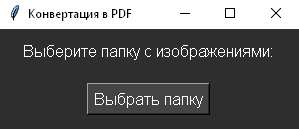

Как выбрать выделенный сервер
Как выбрать выделенный сервер.
Скрипт был написан для упрощения моей собственной работы. Мне будет приятно, если ваша жизнь станет с ним проще. Буквально в пару секунд вы можете конвертировать все изображения в выбранной папке в один pdf. Изображения будут подогнаны по размеру, собраны в алфавитном порядке, а сам pdf будет назван именем первого изображения. Скрипт работает с изображениями в форматах: png, jpg, jpeg, bmp, gif, tiff.
Для удобства я написала небольшой интерфейс для открытия нужной папки и к тому же добавила в архив bat файл для быстрого открытия скрипта. Кнопка для скачивания архива скрипта находится выше. В конце статьи для любопытствующих будет представлен сам код.
python --versionpip install pillow
import os
from PIL import Image
import re
import tkinter as tk
from tkinter import filedialog, messagebox
def numerical_sort(value):
"""Функция для сортировки, учитывающая числовые части в имени файла"""
numbers = re.findall(r'\d+', value)
return list(map(int, numbers)) if numbers else [0]
def images_to_pdf(folder_path):
# Получаем список всех файлов изображений в папке
image_files = [f for f in os.listdir(folder_path) if f.lower().endswith(('png', 'jpg', 'jpeg', 'bmp', 'gif', 'tiff'))]
if not image_files:
messagebox.showerror("Ошибка", "Нет изображений в выбранной папке.")
return
# Сортируем файлы с учётом числовых частей в именах файлов
image_files.sort(key=numerical_sort)
# Имя выходного PDF файла берется из названия первого изображения
output_pdf = os.path.join(folder_path, os.path.splitext(image_files[0])[0] + ".pdf")
image_list = []
# Определяем размер для всех изображений по первому изображению
with Image.open(os.path.join(folder_path, image_files[0])) as first_image:
base_width, base_height = first_image.size
first_image_rgb = first_image.convert('RGB')
image_list.append(first_image_rgb)
# Обрабатываем остальные изображения
for image_file in image_files[1:]:
image_path = os.path.join(folder_path, image_file)
with Image.open(image_path) as img:
# Приводим все изображения к размеру первого изображения
img_resized = img.resize((base_width, base_height))
img_rgb = img_resized.convert('RGB')
image_list.append(img_rgb)
# Первый файл сохраняем, а остальные добавляем в PDF
first_image.save(output_pdf, save_all=True, append_images=image_list[1:])
messagebox.showinfo("Успех", f"PDF успешно создан: {output_pdf}")
def browse_folder():
folder_path = filedialog.askdirectory()
if folder_path:
images_to_pdf(folder_path)
# Создание окна
root = tk.Tk()
root.title("Конвертация в PDF")
root.geometry("300x100")
# Настройки тёмной темы
dark_bg = "#2e2e2e" # Тёмный фон
dark_fg = "#ffffff" # Цвет текста
button_bg = "#444444" # Цвет кнопок
button_fg = "#ffffff" # Цвет текста на кнопках
# Применение тёмной темы
root.configure(bg=dark_bg)
label = tk.Label(root, text="Выберите папку с изображениями:", bg=dark_bg, fg=dark_fg)
label.pack(pady=10)
button_browse = tk.Button(root, text="Выбрать папку", bg=button_bg, fg=button_fg, command=browse_folder)
button_browse.pack(pady=10)
# Добавление отступов и оформления
for widget in (label, button_browse):
widget.config(font=("Arial", 12))
root.mainloop()